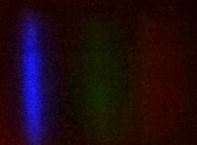

Lego SpectrometerThis is part 2 or the Spectrometer part of my Berry_Blob software. Fork my LegoSpectrometer repository or copy the code in the notebooks, then setup GitHub Pages, and you might have your very own spectra log book! |
|---|
 Scientist: Thuviksa Mathialakan
Scientist: Thuviksa MathialakanLight source: MingQun Invisible Ink Pen's Black Light and Sparrow Mini flashlight Transmission sample: None Date and time: 12/10/2021 @ 6:08 PM Tags: Sparrow, East Lansing, Michigan, MI, mini, flashlight, pen, invisible ink, black-light, MingQun, ultraviolet-light, UV-light, combination |
|
Scientist: Thuviksa Mathialakan Light source: MingQun Invisible Ink Pen's Black Light Transmission sample: None Date and time: 12/10/2021 @ 5:59 PM Tags: pen, invisible ink, black-light, MingQun, ultraviolet-light, UV-light |
 Scientist: Thuviksa Mathialakan
Scientist: Thuviksa MathialakanLight source: Sparrow Mini Flashlight Transmission sample: None Date and time: 11/14/2021 @ 12:46 PM Tags: Sparrow, East Lansing, Michigan, MI, mini, flashlight |
|

Scientist: Thuviksa Mathialakan Light source: Sparrow Mini Flashlight Transmission sample: None Date and time: 11/14/2021 @ 10:09 AM Tags: Sparrow, East Lansing, Michigan, MI, mini, flashlight, sparkle, rainbow, cardboard, reflection |
 Scientist: Thuviksa Mathialakan
Scientist: Thuviksa MathialakanLight source: iPhone-10 Light Transmission sample: None Date and time: 11/13/2021 @ 6:02 PM Tags: dad, iPhone, iPhone-10, phone light, test |
 Scientist: Thuviksa Mathialakan
Scientist: Thuviksa MathialakanLight source: iPhone-10 Light Transmission sample: None Date and time: 11/13/2021 @ 5:18 PM Tags: dad, iPhone, iPhone-10, phone light, test |
| © @ThuviksaM 2021 |